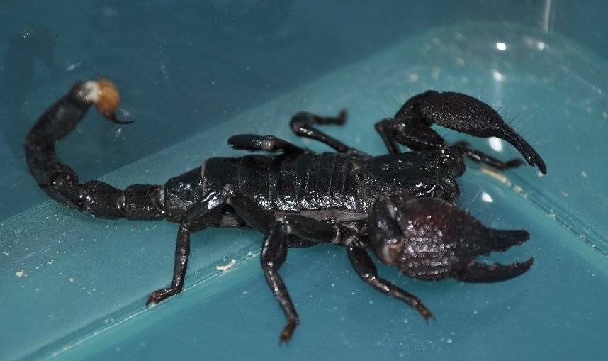
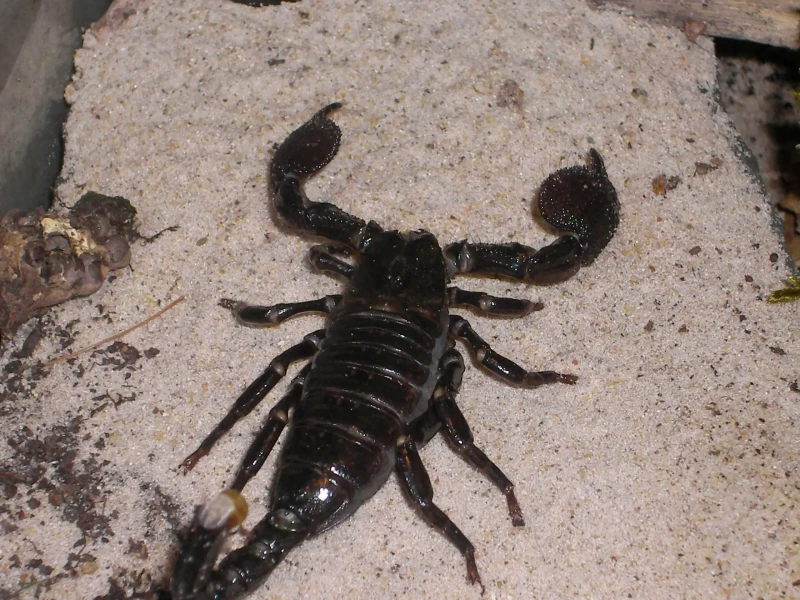

Pochodzenie
Afryka Zachodnia – Ghana, Togo, Nigeria
Wielkość
15–20 cm długości
Długość życia
6–8 lat
Aktywność
Nocna, dzienny tryb ukryty
Jadowitość
Niska – jad porównywalny do użądlenia pszczoły
Pandinus imperator – jeden z największych gatunków skorpionów na świecie

Afryka Zachodnia – Ghana, Togo, Nigeria
15–20 cm długości
6–8 lat
Nocna, dzienny tryb ukryty
Niska – jad porównywalny do użądlenia pszczoły

26–30°C, nocą 24–26°C
70–85%, regularne zraszanie
Nie wymagane, unika światła
10–15 cm, umożliwia kopanie i zakopywanie
Płytka miska, stały dostęp
Usuwanie resztek owadów, wymiana podłoża co 6–8 tygodni

Karmienie co 3–5 dni, młode częściej. Nie podawać tłustych larw jako podstawy diety.